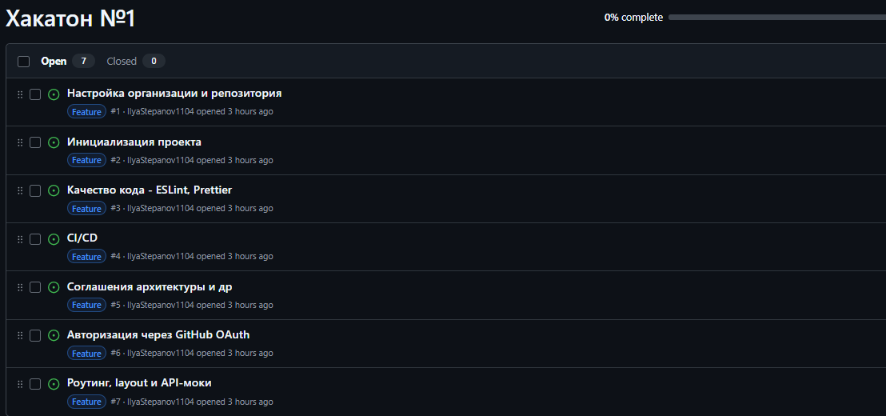
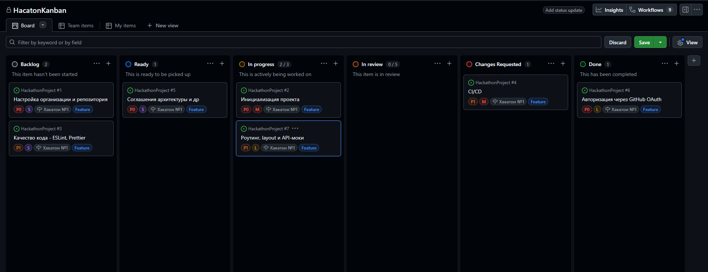

28 марта 2026
Платформа для проверки домашних заданий курса
Инструмент, которым будут пользоваться следующие потоки студентов
У студента есть личный кабинет с оценками и списком домашних заданий.
У каждого задания отслеживается дедлайн.
Студент сдаёт ДЗ через Pull Request
Ментор смотрит diff, оставляет inline-комментарии, меняет статус
GitHub Classroom
Мы не изобретаем хранилище кода и инфраструктуру для автоматического тестирования
Мы делаем удобный интерфейс поверх GitHub API
Мы не просто пишем код для учебного задания
Мы играем в настоящую продуктовую команду
У нас есть продукт, который нужно доставить пользователям
У нас есть тикеты, борды и дизайн-система
У нас есть процессы - груминг, декомпозиция, стендап, ретро
У нас есть заказчик
Что не нравилось в ДЗ прошлого семестра?
Работа не останавливается
Задачи продолжаются
Менторы доступны в чате для вопросов и ревью
Вся работа живёт в GitHub Issues
Каждая задача - отдельный issue. Внутри - чеклист подзадач.
Статусы двигаете сами по ходу работы

Репозиторий
БордаКаждый issue - отдельная ветка
feat/{name}fix/{name}docs/{name}Ветку линкуете к issue - тогда issue закроется автоматически при мёрже
Все ветки вливаются в develop
feat/*developmain
main - только для релизов
В main напрямую никто не пушит (не только лишь все)
feat:fix:docs:
Без апрува ментора в develop не мёржится
Changes Requested
В продуктовой команде есть единый набор UI-компонентов
Не изобретаем кнопки и инпуты - берём из библиотеки
Компоненты копируются в проект - полный контроль над кодом
Легко кастомизировать через Tailwind CSS
Стильно, модно, молодежно
У нас в команде нет дизайнера, поэтому дизайн отдается на откуп программистов и их менторов.
Но, есть примерный референс - какие страницы с какой информацией скорее всего понядобятся.
ССЫЛКА НА FIGMA*Чистого времени на код - около 4 часов
Идём по порядку приоритета
Для каждой: описание -> вопросы -> декомпозиция -> назначение
Инициализация проекта
Priority: 0 Size: M
Поднять Next.js с App Router и подключить весь стек
Результат - приложение запускается локально и npm run build проходит
Этот issue разблокирует всё что связано с вёрсткой и компонентами
create-next-app с TypeScript и App Routerpostcss-preset-env + sass@shadcn
@/ -> src/Качество кода - ESLint, Prettier
Priority: 1 Size: S
Настроить ESLint и Prettier так чтобы весь код выглядел одинаково
Вне зависимости от того кто его писал
Это не бюрократия - это то что делает code review предметным
Ментор смотрит на логику, а не на стиль
import-ordereslint-config-prettierpackage.json: lint,
lint:fix
CI/CD и деплой
Priority: 1 Size: M
Настроить GitHub Actions и Vercel
Каждый PR автоматически проверяется и деплоится на preview-URL
лlint на каждый PRbuild на каждый PRmain в productionАрхитектура и соглашения
Priority: 0 Size: S
Договориться о структуре проекта и зафиксировать её в коде и документации
Без этого у каждого будет своё представление о том куда что класть
Через неделю репозиторий превратится в хаос
src/
├── app/ # Next.js App Router: layouts, pages, providers
├── features/ # Фичи: auth, homework, pr-viewer, admin
├── entities/ # Сущности: user, homework, pr, review
├── shared/ # UI-кит, утилиты, конфиг API, типы
└── widgets/ # Составные блоки страницКакие страницы нам нужны в сервисе?
Разделить их на 4 группы:
README.md: стек, структура, команды запуска,
нейминг коммитов и PRАвторизация через GitHub OAuth
Priority: 0 Size: L
Весь вход в платформу - через GitHub. Никаких логинов и паролей
После авторизации запрашиваем роль с бэкенда
Роль хранится в JWT-сессии, используется в middleware и компонентах
Стек: Auth.js v5 (NextAuth) + GitHub provider
Роутинг, layout и API-моки
Priority: 1 Size: L
Скелет приложения: все основные страницы существуют
Роли защищают маршруты, контент различается по роли пользователя
Фронт работает полностью без бэкенда через NEXT_PUBLIC_USE_MOCKS=true
/login/admin закрыт для всех кроме adminshared/api/types.ts
shared/api/mocks/